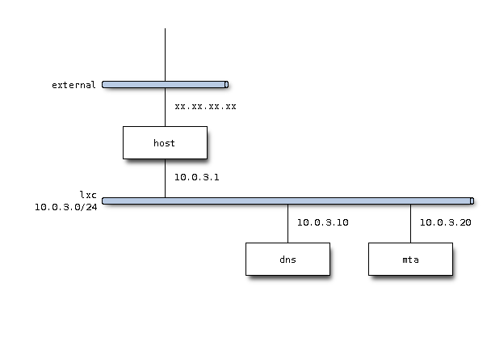

static IP address assignment
Let us configure network related properties of our DNS Server host.
hostname
hostname of host can be configured by editing /etc/hostname file.
static IP address
By default, hosts are configured to obtain IP address from DHCP Server. Configuration is stored in /etc/network/interfaces file.
auto eth0
iface eth0 inet dhcp
Replace above as follows so that IP address 10.0.3.10 is statically assigned for interface eth0.
auto eth0
iface eth0 inet static
address 10.0.3.10
network 10.0.3.0
netmask 255.255.255.0
broadcast 10.0.3.255
gateway 10.0.3.1
resolver
As advertised in it, /etc/resolv.conf file will be overwritten upon system reboot.
# Dynamic resolv.conf(5) file for glibc resolver(3) generated by resolvconf(8)
# DO NOT EDIT THIS FILE BY HAND -- YOUR CHANGES WILL BE OVERWRITTEN
You need to configure IP addresses of DNS servers and search domain in /etc/network/interfaces file as well.
dns-search example.org
dns-nameservers 10.0.3.10 10.0.3.1 8.8.8.8
Resolver will generates such lines as follows in /etc/resolv.conf.
nameserver 10.0.3.10
nameserver 10.0.3.1
nameserver 8.8.8.8
search example.org
Following entry is a good reference.
change IP address range
As described in previous posts, we have some servers in lxc network now.
I would like that servers shall have static IP addresses. Say, in the range from 10.0.3.2 until 10.0.3.99.
And client shall have dynamically assigned address, which should not conflict with server’s ones. Let’s limit range of IP addresses, which DHCP Server, dnsmasq assigns for.
You can configure IP address range by modifying lxc file under /etc/default directory.
$ diff lxc lxc.org
27,28c27,28
< LXC_DHCP_RANGE="10.0.3.100,10.0.3.199"
< LXC_DHCP_MAX="100"
---
> LXC_DHCP_RANGE="10.0.3.2,10.0.3.254"
> LXC_DHCP_MAX="253"
After restart, you will see that dnsmasq will set IP address range as follows:
dnsmasq -u lxc-dnsmasq --strict-order --bind-interfaces --pid-file=/var/run/lxc/dnsmasq.pid --conf-file= --listen-address 10.0.3.1 --dhcp-range 10.0.3.100,10.0.3.199 --dhcp-lease-max=100 --dhcp-no-override --except-interface=lo --interface=lxcbr0 --dhcp-leasefile=/var/lib/misc/dnsmasq.lxcbr0.leases --dhcp-authoritative
Name Server
Now let’s move on to Name Server. Sometimes you would like to have your own name services to manipulate protocol like SMTP.
I hereby demonstrate procedure to set up BIND (version 9). In this example, we use fictitious domain, example.org.
We disregard redundancy and focus on primary server. That is, we omit secondary server :-).
By the way, following articles are good reference for you.
In this sample, we Ubuntu as platform. And goal is to setup instance as follows.

Installation
Installation is quite simple.
$ sudo apt-get install bind9 dnsutils
That’s all.
Server Configurations
Configuration files are stored under /etc/bind directory. You will modify some file and add zone files for forward/reverse lookup.
├── bind.keys
├── db.0
├── db.127
├── db.255
├── db.empty
├── db.local
├── db.root
├── named.conf
├── named.conf.default-zones
├── named.conf.local
├── named.conf.options
├── rndc.key
└── zones.rfc1918
Forward Zone
Append following lines into named.conf.local file so as to specify your domain name and its zone file.
zone "example.org" {
type master;
file "/etc/bind/db.example.org";
};
Create zone file, db.example.org, so as to describe host in the domain.
;
; BIND data file for example.org
;
$TTL 604800
@ IN SOA example.org. root.example.org. (
20130928 ; Serial
604800 ; Refresh
86400 ; Retry
2419200 ; Expire
604800 ) ; Negative Cache TTL
IN A 10.0.3.10
;
@ IN NS dns.example.org.
@ IN A 10.0.3.10
@ IN AAAA ::1
dns IN A 10.0.3.10
;MTA
IN MX 10 mta.example.org.
mta IN A 10.0.3.20
Reverse Zone
And now configure for reverse lookup. Same as forward lookup, append following lines into named.conf.local.file.
zone "3.0.10.in-addr.arpa" {
type master;
file "/etc/bind/db.10";
};
And create a file named db.10 as follows.
;
; BIND reverse data file for network 10.0.3.0
;
$TTL 604800
@ IN SOA example.org. root.example.org. (
20130928 ; Serial
604800 ; Refresh
86400 ; Retry
2419200 ; Expire
604800 ) ; Negative Cache TTL
;
@ IN NS dns.
10 IN PTR dns.example.org.
20 IN PTR mta.example.org.
Logging
Log message has been and will be your friend for debugging problem. Append following lines to named.conf.local file.
logging {
channel query.log {
file "/var/log/query.log";
severity debug 3;
};
category queries { query.log; };
};
And create a log file and change file owner to bind user.
$ sudo touch /var/log/query.log
$ sudo chown bind /var/log/query.log
You will see log messages like this.
client 127.0.0.1#34060 (mta.example.org): query: mta.example.org IN A +E (127.0.0.1)
start service
$ sudo service bind9 restart